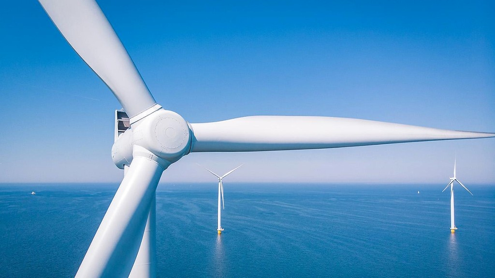

联合国贸易和发展组织家族企业促进可持续发展中国网络，以标准、研究、培训与对话，推动大中华区家族企业把可持续发展写入经营。The UNCTAD Family Business for Sustainable Development China Network uses standards, research, training and dialogue so family businesses in Greater China can put sustainability into how they operate.
了解网络Learn more about us当前工作重点是什么What are the current priorities
四项原则，四条主线Four principles, four lines of work
网络正在推进的工作How the network is putting this to work
查看研究All research首份白皮书预计 2027 年 2 月发布The first paper is planned for February 2027
年度报告与专题白皮书。系列将围绕企业出海、科技创新、负责任投资、气候变化与减碳展开。Annual reports and thematic papers covering international expansion, technology, responsible investment, climate and decarbonisation.
上海说明会 · 2026.12.11Shanghai briefing · 11 Dec 2026
面向上海及周边候选机构，介绍会员安排。场地与议程确认后在活动页更新。For prospective members in and around Shanghai. Venue and agenda will be posted when confirmed.
成立会议暨人工智能闭门会 · 2027.01.22Founding meeting and closed AI session · 22 Jan 2027
五十人以内，受邀参加。Up to fifty people, by invitation.
标准、研究与活动Standards, research and events
承诺2030Pledge 2030
四项原则。签署后可在全球平台公开刊登。Four principles. Once signed, it can be listed on the global platform.

可持续发展指标Sustainability indicators
基于联合国贸发会议《核心指标指南》（2019），对齐可持续发展目标。Built on UNCTAD’s 2019 core-indicator guidance and aligned with the SDGs.
首份白皮书First paper
为企业出海、科技创新、负责任投资、气候与减碳提供议题基础。Sets the agenda for expansion, technology, responsible investment and climate.
香港说明会Hong Kong briefing
面向香港候选机构。场地与议程确认后在本页更新。For prospective members in Hong Kong. Venue and agenda will be posted when confirmed.
青年培养与报告辅导Training and reporting support
承接指标落地和可持续报告编制，并开展青年企业家专题培训。Help with indicators, sustainability reports, and training for young entrepreneurs.
创始理事确认截止Founding council confirmation closes
创始理事二十家，承担治理职责。Twenty founding council seats carry governance duties.
加入中国网络Join the China Network
创始理事、机构会员与个人会员都签署《承诺2030》。创始理事二十家，确认截止 2026 年 12 月 31 日。Founding council members, institutions and individuals all sign the 2030 Pledge. Twenty founding council seats. Confirmation closes on 31 December 2026.